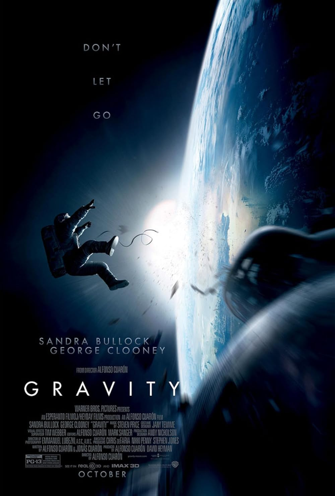

Gravity (2013)
Gravity is a science fiction thriller directed by Alfonso Cuarón, starring Sandra Bullock and George Clooney. The story follows Dr. Ryan Stone, a medical engineer on her first space mission, and veteran astronaut Matt Kowalski. During a routine spacewalk, their shuttle is destroyed by debris from a satellite collision, leaving them stranded in orbit with no communication and limited oxygen. As they drift through the vast emptiness of space, they must fight to survive and find a way back to Earth.
The story begins with a routine spacewalk aboard the Space Shuttle Explorer, where Stone, a medical engineer on her first mission, and Kowalski, a veteran astronaut, are performing maintenance work.
As the narrative unfolds, Gravity becomes more than just a survival story — it’s a meditation on isolation, trauma, letting go, and the human drive to endure even in the face of overwhelming odds. Dr. Stone, emotionally scarred by personal loss on Earth, must fight to stay alive and find the strength to return home.
Starring
- Sandra Bullock
- George Clooney

Go back to the list
Go back home